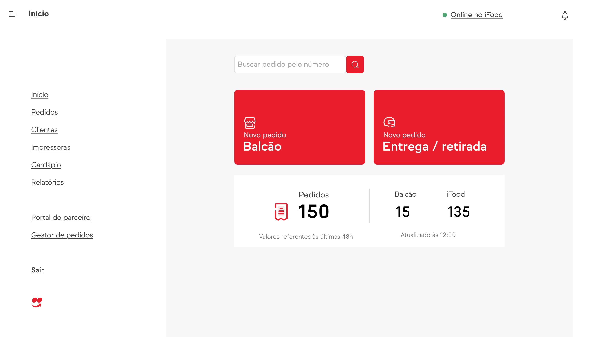
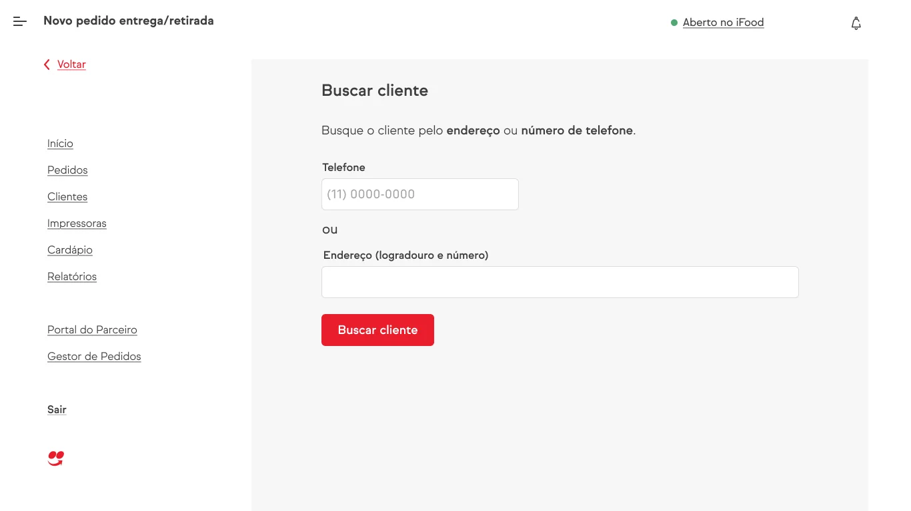
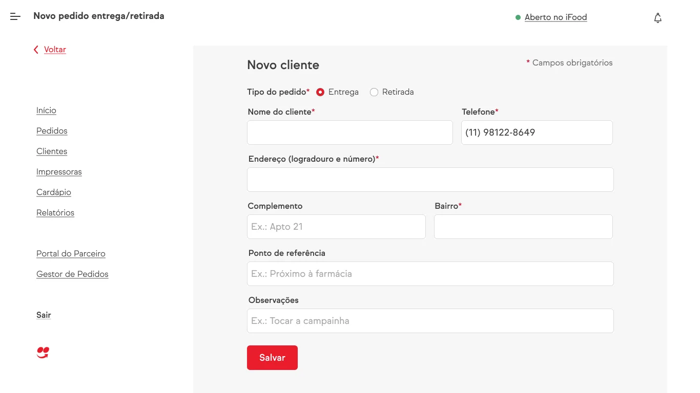
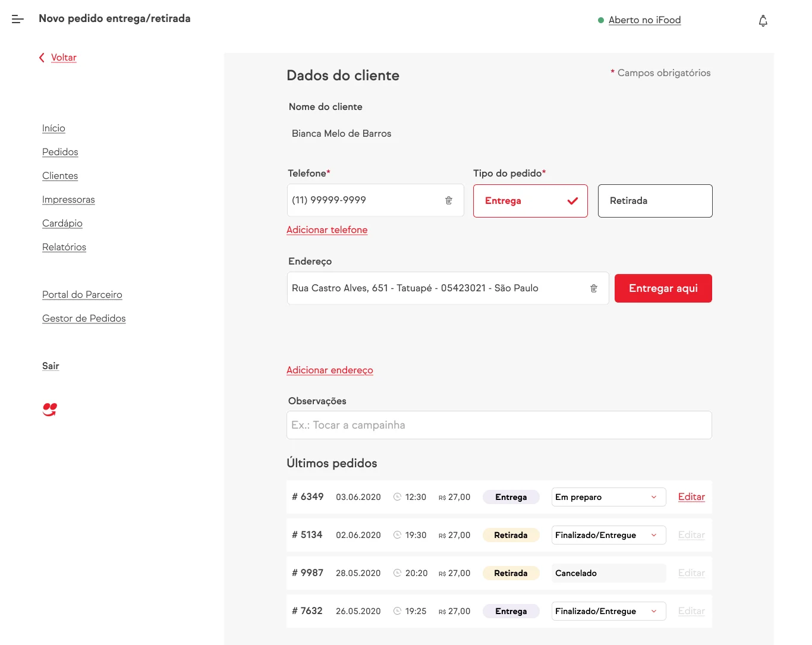
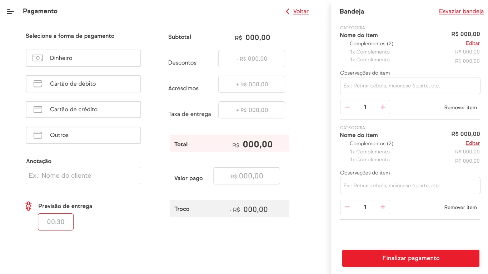
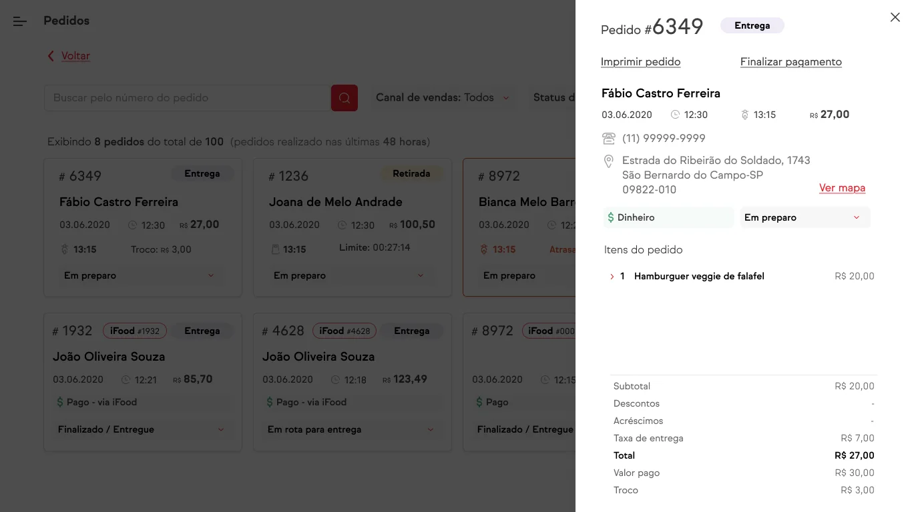
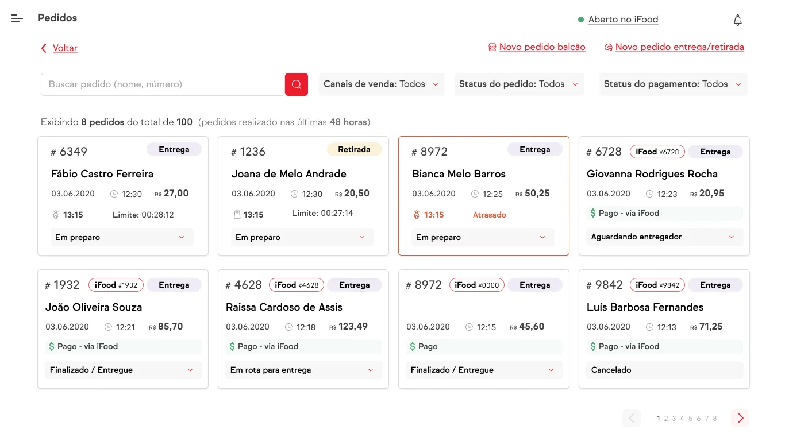
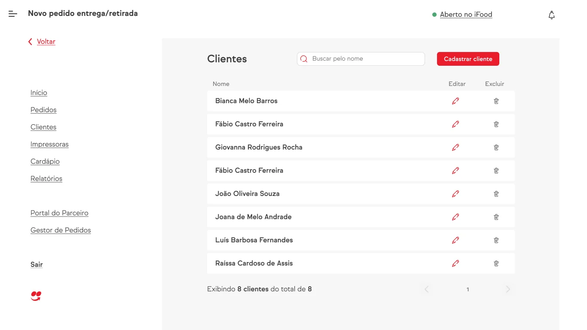
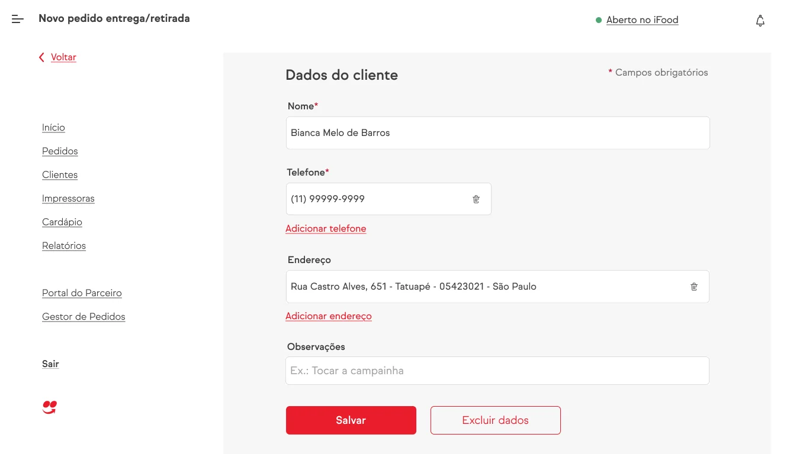

O restaurante precisava administrar pedidos, atendimento e dinheiro ao mesmo tempo. Se o painel não ajudasse nessas tarefas, não haveria motivo para incorporá-lo à rotina.
Na época, a adesão dos restaurantes ao painel era baixa. Cálculos e descontos geravam dúvidas; distinguir pedidos de balcão e delivery nem sempre era simples; e a falta de visibilidade dificultava organizar prioridades e confiar nas informações apresentadas.
Baixa adoção era sintoma de pouca utilidade percebida.
Oportunidade de produto: transformar uma ferramenta pouco adotada em um ambiente que entregasse clareza logo nas tarefas mais frequentes. A proposta combinava acesso rápido às ações, leitura do estado da operação e conexão entre pedidos, clientes e pagamentos.
Mais do que concentrar funcionalidades, o objetivo era reduzir o esforço necessário para entender o que fazer agora — e por quê.

Atender sem reconstruir informações.
Na operação, cada segundo conta. Para apoiar o registro de pedidos, o fluxo explorou busca por telefone ou endereço, recuperação de clientes já cadastrados e cadastro de novos clientes, com distinção entre entrega e retirada.
A escolha de organizar essas etapas em sequência buscava reduzir interrupções e evitar que o operador reconstruísse informações durante o atendimento.



Dar continuidade ao atendimento
A proposta organiza identificação, cadastro e modalidade de serviço como decisões conectadas. A navegação ajuda a manter o contexto antes de avançar para o pedido.
Um valor só ajuda quando pode ser conferido.
Uma das dores centrais era entender a composição do valor: descontos, acréscimos, entrega, troco e total. Sem transparência, até uma conta correta pode parecer pouco confiável.
O estudo trouxe esses elementos para a etapa de pagamento e para o detalhamento do pedido, aproximando o cálculo da decisão que o restaurante precisava tomar. A intenção era tornar a conferência mais simples e oferecer uma explicação visível para cada valor.


Balcão e delivery não seguem a mesma urgência.
O time do restaurante precisava identificar rapidamente quais pedidos exigiam ação e distinguir as modalidades de atendimento. Quando tudo compete pela mesma atenção, priorizar se torna mais difícil e a comunicação perde precisão.
O painel de pedidos explorou cartões, status e filtros para dar visibilidade à operação. A relação com o cadastro de clientes também apoia a recuperação de contexto quando é necessário consultar ou atualizar um atendimento.



Visibilidade para coordenar a rotina
A leitura por pedido e a diferenciação de estados buscam apoiar a priorização e o acompanhamento, especialmente quando balcão e entrega convivem na mesma operação.
O que deveria mudar na rotina do restaurante.
Para avaliar o valor da proposta, três dimensões são centrais: frequência de uso do painel, eficiência na gestão de pedidos e clareza na conferência de valores.
Restaurantes ativos no painel
Taxa de ativação, frequência de uso e retenção dos estabelecimentos que voltam a usar as funcionalidades.
Pedidos tratados com menos atrito
Tempo para localizar e registrar um pedido, uso de filtros, erros operacionais e tempo de resposta por modalidade.
Mais confiança nos valores
Dúvidas e chamados sobre descontos, taxas e cálculos; sucesso na conferência dos valores e percepção de clareza.